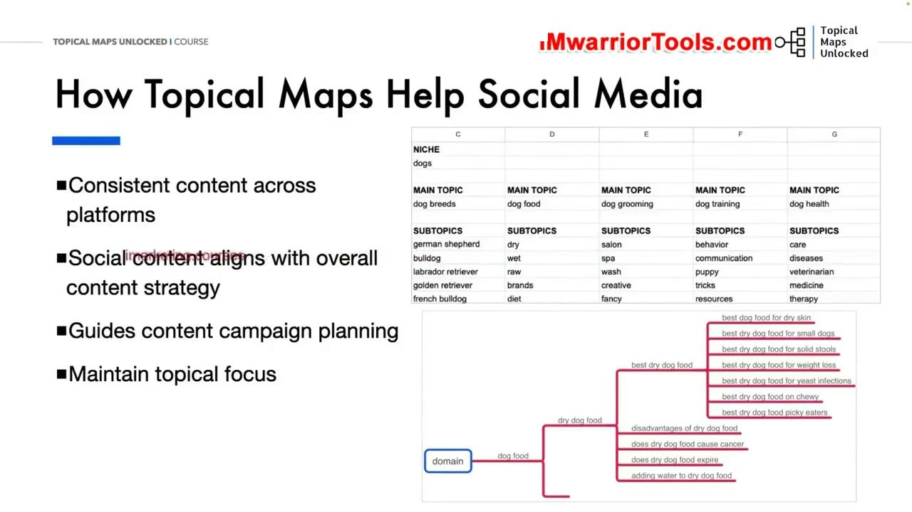
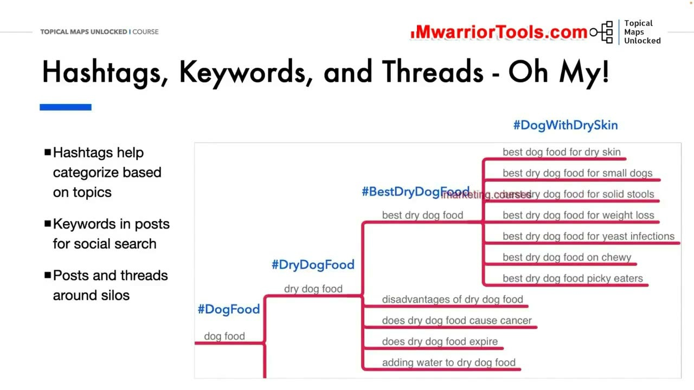
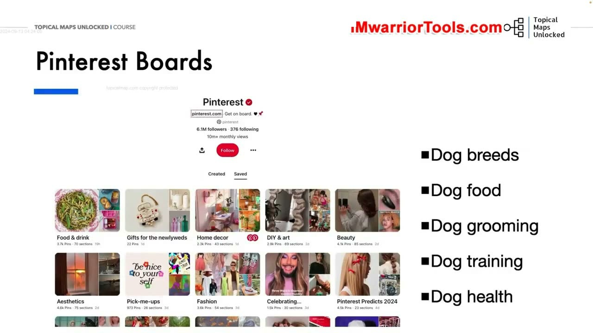
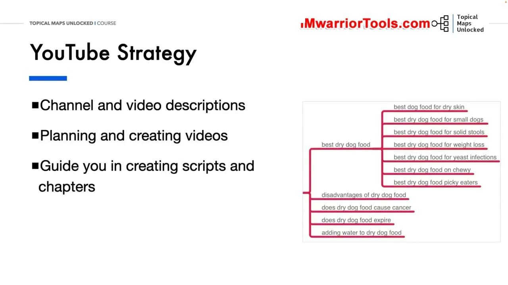
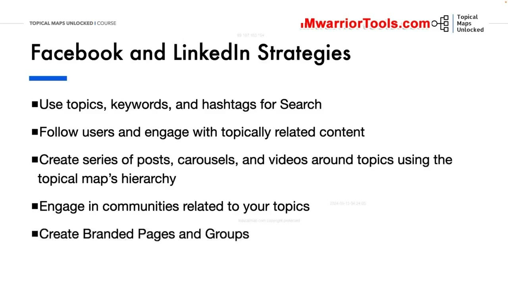

Social Media Planning
1. Bản đồ chủ đề (Topical Map) định hướng Kế hoạch Mạng xã hội như thế nào?
Trong bài học thứ ba của Module 09 & 10, Yoyao đi sâu vào việc triển khai thực chiến: Kế hoạch Mạng xã hội dựa trên Bản đồ chủ đề (Social Media Planning with Topical Maps).
Đa phần các nhà quản lý truyền thông mạng xã hội thường rơi vào tình trạng "sáng thức dậy không biết hôm nay nên đăng nội dung gì", dẫn đến việc đăng bài tùy hứng, chắp vá, thiếu phương hướng và hoàn toàn rời rạc. Khi kết hợp với Topical Map và Sơ đồ tư duy (Mind Map), toàn bộ quy trình này được nâng cấp thành một cỗ máy vận hành bài bản và có tổ chức cao độ:
- Nội dung nhất quán trên mọi nền tảng (Consistent Content Across Platforms): Bất kể độc giả theo dõi bạn trên Facebook, LinkedIn, YouTube, X (Twitter) hay Pinterest, họ đều nhận được một luồng kiến thức đồng bộ và truyền tải cùng một thông điệp cốt lõi của thương hiệu. Bạn không bị phân mảnh thông điệp hay nói những điều mâu thuẫn giữa các kênh truyền thông khác nhau.
- Đồng bộ hóa với chiến lược nội dung tổng thể (Align with Overall Content Strategy): Mỗi bài đăng mạng xã hội không còn là một nội dung đơn lẻ ngẫu nhiên mà là một cánh tay nối dài giúp củng cố vị thế chuyên môn cho website chính, tạo ra một mạng lưới truyền thông cộng hưởng mạnh mẽ và thu hút lượng tương tác khổng lồ.
- Định hướng kế hoạch chiến dịch cụ thể (Guides Content Campaign Planning): Bạn có sẵn toàn bộ cấu trúc phân cấp từ chủ đề chính, chủ đề phụ đến từng bài viết ngách để lên lịch đăng bài liên tục trong nhiều tháng mà không bao giờ bị bí ý tưởng hay cạn kiệt nguồn cảm hứng sáng tạo.
- Duy trì sự tập trung chuyên môn cao độ (Maintain Topical Focus): Ngăn chặn triệt để nguy cơ lan man sang các chủ đề không liên quan làm loãng thương hiệu và gây hoang mang cho tệp độc giả trung thành.
- Hỗ trợ người dùng điều hướng dễ dàng hơn: Khán giả trên mạng xã hội có thể dễ dàng nắm bắt bức tranh toàn cảnh về kiến thức mà bạn cung cấp thông qua cấu trúc phân mục rõ ràng và logic.
Cách tiếp cận có cấu trúc này giúp nỗ lực truyền thông xã hội của bạn đạt hiệu suất và hiệu quả chuyển đổi cao gấp nhiều lần so với cách làm tự phát thông thường. Bạn có thể dễ dàng lập kế hoạch nội dung cho cả năm chỉ trong vài ngày làm việc tập trung dựa trên khung sườn có sẵn của bản đồ chủ đề.
Một chiến lược bài bản như vậy sẽ tạo ra sự an tâm tuyệt đối cho đội ngũ sáng tạo nội dung và giúp thương hiệu phát triển nhanh chóng, vững chắc.

2. Quy tắc Phân loại Hashtags, Từ khóa và Chuỗi bài viết xoay quanh Silo
Trên mạng xã hội, Hashtags và Từ khóa (Hashtags, Keywords, and Threads) chính là công cụ phân loại thông tin mạnh mẽ nhất để kết nối các mảnh ghép nội dung lại với nhau. Yoyao chỉ ra cách ánh xạ trực tiếp cấu trúc cây Topical Map sang hệ thống thẻ mạng xã hội một cách khoa học và bài bản:
Ví dụ cụm chủ đề Thức ăn cho chó (Dog Food):
- Tầng chủ đề chính (Main Topic): Sử dụng thẻ bao quát cấp cao nhất:
#DogFoodđể định danh lĩnh vực lớn mà thương hiệu của bạn đang bao phủ. - Tầng chủ đề con cấp 1 (Subtopic 1): Sử dụng thẻ phân loại chuyên mục:
#DryDogFood(Thức ăn khô cho chó) để gom nhóm tất cả các bài viết liên quan đến phân khúc này. - Tầng bài viết chi tiết (Individual Post / Subtopic 2): Sử dụng các thẻ cụ thể ngách sâu:
#BestDryDogFood,#DogFoodForSkinAllergies,#DogFoodWithDrySkinnhằm tiếp cận chính xác những người dùng đang tìm kiếm giải pháp cụ thể cho thú cưng của họ.
Quy tắc liên kết chéo linh hoạt trên Mạng xã hội:
Khác với website bị ràng buộc nghiêm ngặt bởi ranh giới Silo để bảo vệ dòng chảy PageRank, trên mạng xã hội không có nỗi lo về cấu trúc liên kết nội bộ kỹ thuật. Do đó, bạn hoàn toàn có thể tự do tham khảo và liên kết chéo giữa các bài đăng và chuỗi bài trước đây của mình một cách linh hoạt!
Ví dụ: Khi bạn xuất bản bài đăng về thức ăn ướt cho chó, bạn hoàn toàn có thể trỏ người đọc quay lại xem bài đăng trước đó về thức ăn khô cho chó, hoặc liên kết đến các tình trạng sức khỏe cụ thể nơi mà việc kết hợp giữa thức ăn khô và thức ăn ướt là giải pháp tốt nhất. Việc tạo ra các đường dẫn tham khảo nội bộ giữa các bài đăng này đóng vai trò y hệt như liên kết nội bộ trên website: Nó giữ chân người dùng ở lại lâu hơn trên trang cá nhân / tài khoản thương hiệu của bạn, xây dựng độ tin cậy sâu sắc và gia tăng lượng người theo dõi trung thành qua thời gian.
Mỗi bài đăng trên mạng xã hội sẽ trở thành một cánh cổng mở ra hệ thống tri thức phong phú, thúc đẩy độc giả khám phá sâu hơn về thương hiệu của bạn.

3. Chiến lược Triển khai chuyên sâu trên Pinterest: Bảng ghim và Phân đoạn
Yoyao phân tích chi tiết cách áp dụng cấu trúc Silo của Topical Map vào nền tảng tìm kiếm hình ảnh hàng đầu thế giới Pinterest:
- Ánh xạ Bảng ghim (Pinterest Boards): Mỗi chủ đề chính (Main Topic) trên Topical Map sẽ trở thành một Bảng ghim riêng biệt. Ví dụ cho trang web thú cưng: Bảng Dog Breeds (Các giống chó), bảng Dog Food (Thức ăn cho chó), bảng Dog Grooming (Chăm sóc lông chó), bảng Dog Training (Huấn luyện chó), bảng Dog Health (Sức khỏe chó). Mỗi bảng có bản sắc chuyên môn rõ rệt và thu hút những nhóm người quan tâm riêng biệt.
- Ánh xạ Phân đoạn trong Bảng (Pinterest Sections): Bên trong mỗi Bảng ghim lớn, bạn đi sâu vào cấu trúc cấp 2 bằng cách tạo các phân đoạn ghim tương ứng với các Subtopics. Ví dụ: Trong bảng Dog Breeds, bạn tạo các mục ghim riêng cho từng giống chó cụ thể: German Shepherd, Bulldog, Labrador Retriever, Golden Retriever, French Bulldog. Cấu trúc tổ chức này phản chiếu hoàn hảo 100% cấu trúc Silo của website, giúp người dùng Pinterest dễ dàng tìm thấy các ý tưởng hình ảnh liên quan mà họ đang tìm kiếm!
Cấu trúc phân tầng trực quan này giúp tối ưu hóa thuật toán tìm kiếm nội bộ của Pinterest, đưa các ghim hình ảnh và infographic của bạn tiếp cận hàng triệu người dùng đang tìm kiếm giải pháp chăm sóc thú cưng mỗi ngày, tạo ra nguồn truy cập hình ảnh cực kỳ chất lượng và bền bỉ qua năm tháng.
Pinterest là một kênh tiếp cận trực quan vô cùng mạnh mẽ cho các ngành hàng liên quan đến lối sống, sức khỏe và thú cưng khi được tổ chức khoa học theo Silo.

4. Chiến lược Kênh Video YouTube: Kịch bản, Timestamps và Danh sách phát (Playlists)
Đối với nền tảng video khổng lồ YouTube, Topical Map đóng vai trò là kim chỉ nam định hướng toàn bộ quy trình sản xuất nội dung đa phương tiện chuyên nghiệp:
- Sử dụng các chủ đề chính, chủ đề phụ và từ khóa từ Topical Map để định hướng đặt tiêu đề video chuẩn SEO, viết mô tả kênh và phần mô tả chi tiết của từng video nhằm giúp thuật toán YouTube hiểu rõ ngữ cảnh chuyên môn.
- Lên kế hoạch sản xuất video dài và video ngắn (YouTube Shorts): Bạn có thể quay một video dài bao quát về Thức ăn khô tốt nhất cho chó, chia các phân đoạn (Chapters / Timestamps) theo từng chủ đề phụ, sau đó cắt nhỏ thành các video ngắn (Shorts) giải đáp riêng cho từng ngách (chó nhỏ, da khô, tiêu hóa, phân rắn). Kỹ thuật này giúp bạn tối đa hóa hiệu suất sản xuất từ một lần quay duy nhất, vừa có video dài chất lượng vừa có hàng chục video ngắn bắt trend thu hút hàng ngàn lượt xem.
- Tổ chức Danh sách phát (Playlists): Mỗi nhánh Silo sẽ được tổ chức thành một Danh sách phát chuyên biệt. Ví dụ: Kênh truyền thông thể thao lớn NBC Sports tổ chức các danh sách phát chuẩn chỉnh xoay quanh Thế vận hội Olympic (khoảnh khắc bơi lội, bóng rổ, thể dục dụng cụ, những khoảnh khắc hài hước nhất của Snoop Dogg tại Paris). Đưa các danh sách phát nổi bật này lên trang chủ của kênh YouTube để tối ưu hóa thời gian xem (Watch time) và giữ chân khán giả liên tục trên kênh của bạn.
- Đối với các thương hiệu lớn có nguồn lực dồi dào, bạn có thể tạo các kênh phụ chuyên biệt cho từng chủ đề nhánh (giống như cách nhà sáng tạo nổi tiếng MrBeast vận hành nhiều kênh phụ cho các mảng hoạt động khác nhau để tối ưu hóa thuật toán đề xuất cho từng tệp khán giả riêng biệt).
Chiến lược video có tổ chức này biến kênh YouTube của bạn thành một trung tâm truyền thông mạnh mẽ, bổ trợ đắc lực cho uy tín của website chính.

5. Chiến lược X/Twitter, Facebook, LinkedIn và Kỹ thuật Social Listening
Yoyao hoàn thiện bức tranh tiếp thị đa kênh với các nền tảng mạng xã hội văn bản, chiến dịch email nuôi dưỡng và kỹ thuật lắng nghe thị trường:
- Chiến lược X / Twitter:
- Sử dụng từ khóa và hashtag từ Topical Map để tìm kiếm các cuộc thảo luận nóng hổi trong ngành.
- Tạo các danh sách Twitter Lists phân loại theo từng danh mục chủ đề để theo dõi có chọn lọc những người có tầm ảnh hưởng trong ngách.
- Lập kế hoạch xuất bản các chuỗi bài đăng (Twitter Threads) chuyên sâu đi sâu vào từng ngách nhỏ của Silo, chủ động tham gia và tổ chức các cuộc trò chuyện chuyên môn để xây dựng thẩm quyền cá nhân và thương hiệu.
- Chiến lược Facebook & LinkedIn:
- Lập kế hoạch xuất bản định kỳ hàng tuần, hàng tháng xoay quanh các chủ đề chính và chủ đề phụ đã định sẵn.
- Tạo các bài viết định dạng vòng quay (Carousels), video ngắn và bài viết dài có giá trị chuyên môn cao.
- Tận dụng sức mạnh thẩm quyền tên miền khổng lồ của LinkedIn (LinkedIn Pulse / Articles / Newsletters) để xuất bản các bài viết tái sử dụng từ blog, giúp gia tăng khả năng xếp hạng trên Google và thu hút các liên kết tự nhiên có giá trị cao.
- Thành lập các Trang doanh nghiệp (Branded Pages) và Nhóm cộng đồng riêng để làm phễu giữ chân khách hàng trung thành.
- Chiến dịch Bản tin Email (Email Sequences):
- Dựa vào các số liệu phân nhánh trên sơ đồ tư duy (Mind Map), bạn có thể dễ dàng thiết kế một chuỗi 13 email nuôi dưỡng chuyên sâu xoay quanh Silo Thức ăn khô cho chó bằng cách tái sử dụng nội dung từ 13 bài viết blog tương ứng.
- Tạo các nam châm thu hút khách hàng (Lead Magnet) như tài liệu hướng dẫn PDF toàn diện để kích thích người dùng để lại email nhận bản tin.
- Kỹ thuật Lắng nghe Xã hội (Social Listening for Topics):
- Theo dõi liên tục các chủ đề đang được thị trường thảo luận sôi nổi thông qua các công cụ: Google Alerts (miễn phí), Hootsuite, Sprout Social (trả phí chuyên sâu).
- "Một mũi tên trúng hai đích" (2 birds with 1 stone): Khi phát hiện một chủ đề mới đang là xu hướng nóng, bạn vừa có ngay nội dung để đăng lên mạng xã hội bắt kịp xu thế, vừa bổ sung kịp thời nhánh chủ đề đó vào Topical Map trên website của mình!
- Lắng nghe động thái của đối thủ cạnh tranh để phát hiện những thiếu sót của họ và nhanh chóng điều chỉnh nội dung để lấp đầy khoảng trống thị trường.
Lời khuyên chiến lược đúc kết từ Yoyao:
Hãy luôn giữ cho bảng tính Topical Map và sơ đồ tư duy của bạn được cập nhật thường xuyên. Việc có một hệ thống tổ chức khoa học sẽ giúp bạn không bao giờ bị quên bài hay mất thời gian tìm kiếm lại những gì đã làm. Hãy cân bằng hài hòa giữa các nội dung giáo dục có giá trị lâu dài (Evergreen Content) và các chủ đề xu hướng nóng hổi (Trending Topics). Khi có Topical Map dẫn đường, toàn bộ nỗ lực truyền thông của bạn sẽ luôn duy trì được thông điệp nhất quán, thu hút độc giả mạnh mẽ và tối ưu hóa tối đa hiệu suất kinh doanh!
Đó chính là con đường ngắn nhất và bền vững nhất để xây dựng một đế chế nội dung số thống trị toàn diện ngách thị trường của bạn.
Khi mỗi kênh truyền thông đều cộng hưởng và bổ trợ cho nhau, thương hiệu của bạn sẽ phát triển với tốc độ phi thường và tạo ra một hàng rào phòng thủ vững chắc trước mọi đối thủ cạnh tranh.
Một cỗ máy truyền thông đa kênh đồng bộ sẽ giúp bạn tự tin làm chủ cuộc chơi tiếp thị số trong kỷ nguyên trí tuệ nhân tạo.

Nguồn và đối chiếu
- Topical Maps Unlocked 2.0 · 03-Social Media Planning (Video bài học chính).
- Bản tiếng Anh không có video riêng cho bài học này; nội dung đối chiếu trực tiếp từ slide và video chính.